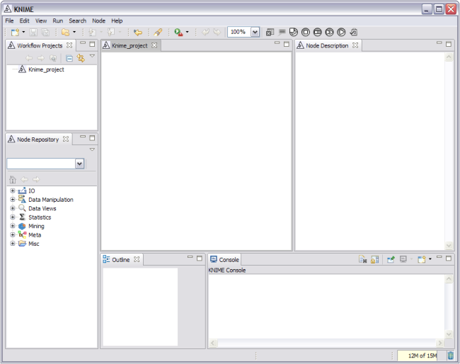
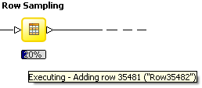
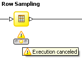
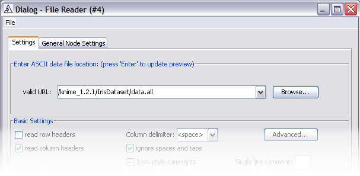
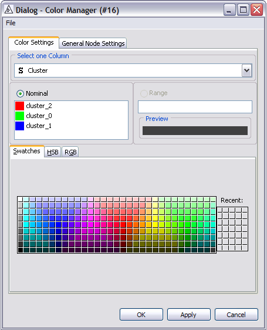
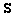

Nodes in the editor appear with their icon, their name, their ports and
a traffic-light status display:
Nodes in the editor appear with their icon, their name, their ports and
a traffic-light status display:The installation procedure is illustrated for the standalone version of KNIME.
Download the standalone version of KNIME from http://www.knime.org/download/win32/knime_win32.x86.zip. Extract the downloaded zip file to any directory on which you have write permissions.
This is all that is needed to install KNIME. There is no need to execute a Setup application or set any variables. KNIME will not leave many traces in your system.
Download the standalone version of KNIME from http://www.knime.org/download/linux/knime_linux.gtk.x86.tar.gz. Extract the downloaded archive to any directory on which you have write permissions.
This is all that is needed to install KNIME. There is no need to execute a Setup application or set any variables. KNIME will not leave many traces in your system.
After installation, in the root directory of KNIME you will find the sub directory "IrisDataset", which contains a small dataset on iris plants. The dataset has five columns (attributes). Each row represents a single iris plant. The first four columns describe the width and length of the two characteristical leaves of an iris plant. The fifth column describes the class the iris belongs to. This dataset represents a simple classification dataset and can easily be used to get to know to the basics of KNIME.
More example datasets can be downloaded from our web site at http://www.knime.org/download/datasets.zip.
In the KNIME root directory the application is started via
After the application has been started the KNIME application window appears (the screen shots in the following haven been taken from the Windows version).

KNIME is implemented as an Eclipse Plugin. The current KNIME product version 1.2.1 is running on the Eclipse version 3.2. For details on using the Eclipse workbench we refer to the User Guide at http://www.eclipse.org/documentation/ or the "Help" menu of KNIME which also includes the Eclipse workbench help.
In the following the different parts of the KNIME workbench (see the above screenshot) are described.
The big window in the middle is the editor window in which data analysis flows are constructed.
The lower-left Node Repository provides you with a view that lists all nodes (modules), grouped in several category folders. From here you can Drag&Drop nodes to the editor window as you need them.
The Console view, in the lower part of the screen, displays error and warning messages. They are also sent to the log file. You may change the log level (DEBUG, WARN, ERROR) under File -> Preferences -> KNIME.
The Node Description view provides information about selected nodes (this view is empty in the picture above, because no node has been selected yet). It also shows the content of a node category if a category has been selected in the Node Repository view.
The workflow projects navigator window shows all currently defined workflow projects. The context menu of the navigator allows you to create new projects, import existing workflows into the workbench and export own workflows. Each project is saved in the workspace. The workspace is located in your KNIME installation directory by default (see below how to change this). On the file system a workflow project consist of several files and folders to store the current status of a flow; this structure is not visible in the Workflow Projects Navigator as it represents internal information not intended to be changed manually.
KNIME allows to easily integrate new modules, i.e. analysis nodes. Available are node extensions at our Update Site. A convenient way to download these new KNIME features is via the KNIME update mechanism. In KNIME select "File", "Update KNIME..." (or in the Developer Version it is "Help", "Software Updates", "Find and Install..."). The Update Wizard opens. If you expand the KNIME site, you see three main categories, (dependent on whether you use KNIME or the KNIME developer version): KNIME Base Package, (KNIME Development Wizard), KNIME Extensions. You may now select the features you want to install. If you select a feature and receive an error about a configuration problem, click the "Select Required" button. This automatically selects all required features. You need to restart KNIME after installing new extensions in order to get them activated.
You build a flow by dragging and dropping nodes from the Node Repository into the Editor window and connecting them. Nodes are the basic processing units of a workflow. Each node has input and/or output ports. Data is transported through connections from these node output ports into connected input ports. After positioning the nodes, you fully connect the inputs of each node to outputs of a predecessor node. Click on an output port and drag the connection to the input port that should receive data from this output. Feedback loops are not permitted. Model generating nodes also have model ports to transfer prediction or other models (blue squares). Model ports should only be connected to ports expecting the same kind of model.
Nodes in the editor appear with their icon, their name, their ports and
a traffic-light status display:
Ports on the left are input ports; the ones on the right are output ports. Ports with a triangle are data ports. Data model ports are represented by small blue squares. The status display has three states: red, amber and green.
The red light means that the node is not ready to execute yet. It is either not fully connected, some settings may be missing or incorrect, or the state of the predecessor node is also red. User action is required to set up this node.
When all settings have been made and all incoming ports are connected, the node is ready to be executed and shows the amber light.
When a node is executed (i.e., the node has read the data from its input ports, performed its task - such as filtering, transforming, or clustering data, etc. - and has sent the result data and/or models to its output ports), the status bar shows a green light.
A central KNIME node is the Color Manager node (in the categories Data Views / Property) required to color data rows. This color affects many views and helps to differentiate the data. If you insert this node into the flow, the data rows will be coded according to specific colors. In the settings of this node, colors are mapped to values of an attribute. The color of a displayed data row depends on the row's value for this attribute.
After the flow is fully connected, nodes still showing a red
light need to be configured. If a node shows an amber state after
connecting it, the default settings have been applied. A right-click on
the node opens the context menu; the item Configure
shows the
node's individual settings dialog. Adjust the settings as needed (refer
to the Node Description view for special node settings) and
close the dialog with OK
. Re-configuring a previously executed
node resets it (i.e. all data or models computed during execution and
available at the output ports will be discarded). The user settings from
the dialog are stored with the flow when it is saved.
When all nodes show an amber status the flow can be executed. During execution a node performs its specific task (a filter node starts filtering, a decision tree node builds its data model). Nodes are executed from left to right, i.e. a node can only be executed once all of its connected predecessors have finished executing. Execution is triggered from the context menu (right-click) of a node. If you execute a node at the end of the flow, the workbench will first execute all predecessor nodes before the selected node is executed. You can select multiple nodes in the flow and trigger execution for all of them; optionally you can execute all executable nodes with the corresponding button in the action bar. The workbench determines the order in which the nodes have to be executed and executes nodes in parallel (each in its own thread), if possible. During execution, the status indicator is replaced by a progress bar (see the left Row Sampling node below) and a progress message can be seen by hovering the mouse over the progress bar. A running node can be canceled using the context menu. Successfully executed nodes switch to a green status. Saving the workflow after execution stores all results. If execution of a node was not able to be finished, (e. g. due to cancelation or errors in the incoming data), an icon will appear in the nodes symbol and a tooltip will display the warning or error message if you move the mouse over that node's warning or error sign (see the right Row Sampling node below).
 Most nodes provide a view that displays their computed results. To open a node's view, select the view from the context menu (right-click) of the node. Some nodes may have multiple views, providing different representations of their results. You can always open several instances of a view to allow for different views of the same data. Most views will only be displayed once the node has been executed. The color of the data displayed in the views depends on the settings in the Color Manager node. This should be inserted into the flow as a predecessor of the view node(see Section Color Manager Node). If you do not include the Color Manager, all data is displayed in gray.
If you select data in one view and hilite it, you can have it hilited automatically in all other available views of the workflow that support this function. Supporting views will either have a menu item in the window menu bar or a context menu with a hilited entry. The hilited data points are emphasized by orange color in all views showing the same data, independent of whether the corresponding node is positioned towards the beginning or towards the end of the flow. This even works across different data models (if the transforming node supports it).
If you want to delete KNIME from your system, first, close the application, and then simply delete all files from your installation directory: the directory to which you extracted the files.
We now want to take you step-by-step through the process of building a small, simple work flow: we read in data from an ASCII file, cluster the data and display the data in a table and a scatter plot. After we execute this flow we will examine the data model that has been built. We assume you have just started KNIME with an empty worksheet.
In the Node Repository expand the IO and the contained Read category as depicted below (left side) and Drag&Drop the File Reader icon into the Editor window.

The next node for now will be the K-Means clustering algorithm. Expand the Mining category followed by the Clustering category, and then drag the K-Means node to the flow.
In the search box of the Node Repository, enter color
and press Enter. This limits the nodes shown to the ones with color
in their name (see figure above in the middle). Pull the Color
Manger Node into the workflow (this node will define the color in the
data views later). To get all nodes back in the repository, press ESC in
the search field of the Repository View. Now, drag the Interactive
Table and the Scatter Plot from the Data Views
category to the Editor Window and position it to the right of the Color
Manager node.
Now you need to connect the nodes in order to get the data flowing. Click an output port and drag the connection to an appropriate input port. Complete the flow as pictured below:
Of course, your nodes will not show a green status, as long as they are not configured and executed.
Fully connected nodes still showing a red status icon need to be configured.
Start with the File Reader, right-click it and select Configure from the menu. Navigate to the "IrisDataSet" directory located in the KNIME root directory. Select the data.all file from this location. The dialog tries to guess the settings for the selected file. For purposes this data set, these settings are just fine. The File Reader's preview table shows a sample of the data. Press OK to store the settings in the file reader node.
You will see that once the node has been configured correctly, it switches to yellow (meaning ready for execution). After that, the K-Means node will immediately turn yellow, since its default settings will be applied. To be sure, that the default settings fit your needs, open the dialog and inspect the default settings.
In order to configure the Color Manager node you must first execute the K-Means node. After execution all possible values and ranges of all attributes are known: this meta information is propagated to the successor nodes. The Color Manager needs this data before it can be configured: Right-click on the K-Means node and choose Execute. Once it has finished, open the configuration dialog of the Color Manger node.
Select the column that contains the attribute you want to use for coloring and assign a color to each nominal value. The Color Manager, by default, chooses the first nominal column (here the String column with the class information) and assigns default colors to it. Choose the column containing the cluster and click OK to close the dialog. You might want to change the assigned color: select the attribute value and choose a color in the color chooser panel below. The color will be updated immediately. (Of course, also numeric data can be colored).
The successor nodes do not need to be configured. The Interactive Table node is a pure view node (it shows the data in a table) and has no user settings, while the K-Means and the Scatter Plot nodes apply default settings.
Now execute the Scatter Plot node by selecting Execute
from its context menu. The workbench will execute all predecessor nodes
for you. In a larger, more complex flow you could select multiple nodes
and trigger execution for all of them. The workflow manager will execute
the nodes as needed, each in its own thread, in parallel, if possible.
Note, that the Interactive Table node is executed automatically. It does
not perform any time-consuming task during execute (it simply displays
data); therefore it executes itself whenever its successor has been
executed. This is a convenience feature.
In order to examine the data and the results, you need to open
the nodes' views. In our example, the K-Means, the Interactive Table and
the Scatter Plot have views. Open them from the nodes' context menus as
displayed in the figure of the flow.
The table view: displays the data vectors in rows. Each row is
marked with the color set by the color manager node. There are several
renderers available for different data types, right click on the type
icon (
in the column header in the table to try them out. The column with the
class labels is a String column ( ); instead of renderes this column just
provides a list with all possible values.
The K-Means view: shows the resulting centroids.
The Scatter Plot view: shows the data points with the colors
assinged to the clusters.
Select some points in the scatter plot and choose Hilite Selected from the Hilite menu. The hilited points are marked with an orange border. You will also see the hilited points in the table view, where the row background of hilited rows is colored with orange as displayed in the figure below. The propagation of the hilite status works for all views in the flow displaying the same data.
Now this was just a very simple example to get you started. There
is a lot more to discover. Play with it! We tried to keep it simple and
intuitive. We would love to receive your feedback and find out what you
liked and what you did not like; things you find awkward or things that
did not seem to work. If you want to report a problem, it would be
helpful if you could provide us with a stack trace. This can be found in
the log file (<workspace_dir>/.metadata/knime/knime.log).
To report a problem: send an email to contact@knime.org
and be sure to include: